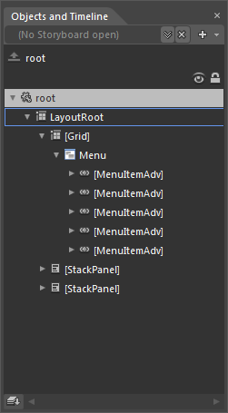
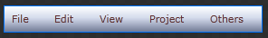
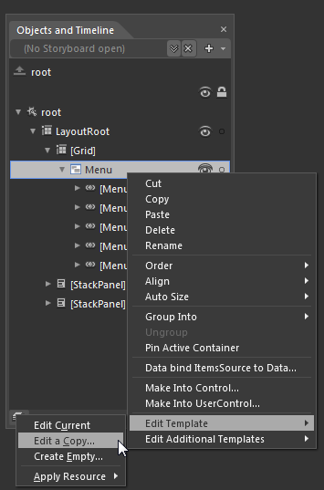
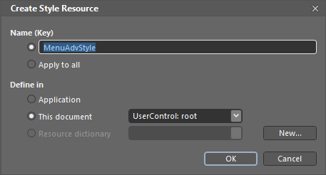
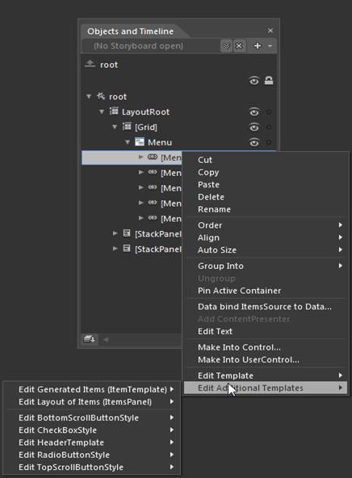
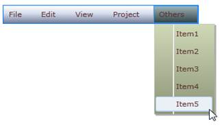

You can customize MenuAdv and MenuItemAdv in Expression Blend. After adding MenuAdv and MenuItemAdv to the design view, you can see MenuAdv and MenuItemAdv in the Objects and Timeline window.

Figure 732: MenuAdv and MenuItemAdv Displayed in Objects and Timeline Tap

Figure 733: Expression Blend Design View
Right-click MenuAdv and in EditTemplate option select Edit a Copy and assign the key name to the resource edited. The same process can be repeated to edit the MenuItemAdv style.

Figure 734: Edit the MenuAdv Template

Figure 735: Assign Key Name to Resource
User can also customize the appearance of the TopScrollButtonStyle, BottomScrollButtonStyle, CheckBoxStyle & RadioButtonStyle using the Edit Additional Templates option by doing right click on the MenuItemAdv and selecting the respective styles from the option.

Figure 736: Edit Additional Templates
The following screen shot shows the MenuAdv and MenuItemAdv templates edited and customized by using Expression Blend.

Figure 737: MenuAdv with Custom Look